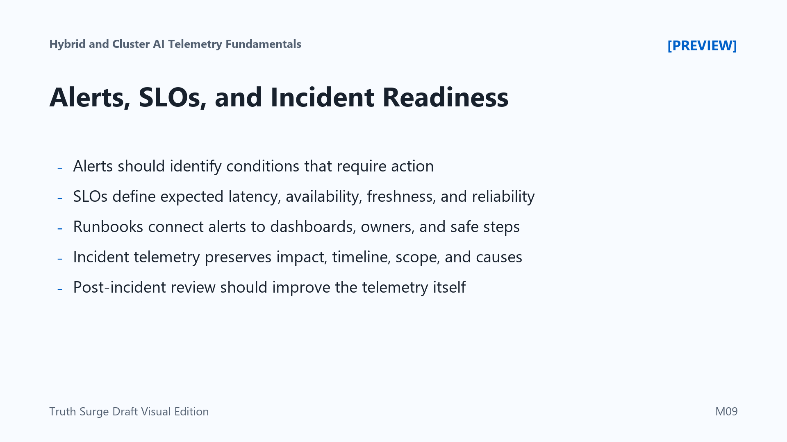

Alerts, SLOs, and Incident Readiness
Connecting to LMS... Progress: in progress

Narration
Alerts should point to conditions that require action, not every interesting fluctuation. In AI environments, noisy alerts can be especially tempting because there are many signals: latency, queue depth, GPU pressure, pipeline freshness, retrieval health, model-serving errors, dependency failures, and policy decisions. Alert design should prioritize user impact, operational risk, and clear ownership.
Service-level objectives help teams define what good behavior means. For AI systems, SLOs may cover inference latency, availability, error rates, timeout rates, queue delay, retrieval availability, pipeline freshness, model-serving success rates, and data processing reliability. These objectives turn vague concerns into measurable expectations that engineering and operations teams can discuss together.
Runbooks connect alerts to action. A useful runbook points responders toward likely causes, dashboards, logs, traces, owners, escalation paths, and safe remediation steps. It should explain how to distinguish a model-serving issue from scheduler pressure, stale retrieval data, network delay, storage bottlenecks, or an external dependency. Runbooks should also clarify what not to do when the evidence is incomplete.
Incident-ready telemetry preserves evidence about impact, timeline, scope, and contributing factors. After an incident, the review should improve telemetry, not just fix the immediate issue. If responders lacked a label, dashboard, audit record, freshness signal, or correlation ID, that gap is part of the learning. Better telemetry makes the next incident shorter, clearer, and less dependent on individual memory.